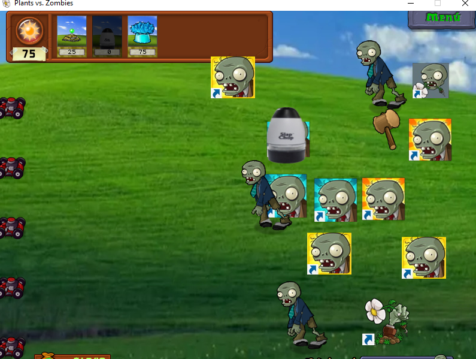
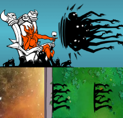

Plants with doubtful balance
|
Well, in this entry I will cover the remaining plants that I did not cover in previous entries, with which, I would finish covering all the changes that I have made, to be able to dedicate myself in later entries to file the progress in chronological order, without anything else to say, let's begin.
I will start with the plants of the first scene (even though they are the last ones I edited), since all of them have been modified, mainly because I wanted to pass a build to friends so they could test the mod and see changes already at the beginning. First I will mention a couple of plants that I practically already described, Peashooter and Repeater, now they are cheaper and what I said in the first entry is maintained, although there would also be Snow Pea, with similar changes, lower cost, longer time between firing, and, in addition, higher damage in the frozen peas, which also benefits Hydra Pea (the modded Threepeater). Then there would be one of the plants that I liked the result, the Nut; in the original game it is a wall in front of the zombies, but there is also the bowling mini-game, where you throw nuts at the zombies, these roll and bounce after each zombie they hit. My idea was that after taking some damage the nut would roll away like in the minigame, and, thanks to a script, I was able to achieve it. In addition, I also reduced its resistance to compensate for its new offensive factor. |
 |
|---|
| Wall-nut Bowling |
|
There would also be others like the Potato Mine, which now takes longer to prepare, its explosion does less damage, but this one has an area of 3x3; now the Chomper takes less time to swallow zombies and can eat zombies that are behind it (via script), ideal for the bastards. To finish with the day level, there would be the plant that has caused me more problems so far, the Cherry Bomb; at first I did not know what to do with it, but I found a very interesting script that made that, when it exploded, it launched projectiles in all directions, moreover you could modify which projectile went to which place. |
 |
| This, each projectile to a site |
|
It was pretty cool, but, it made the game very unstable, causing it to freeze many times, so I had to make changes. In the end I managed to keep the script, but only making a frozen watermelon pop down, which is not bad either. In addition, I also increased the time it takes to explode which, apart from also affecting jalapeno by sharing the same time, made me break out in a cold sweat every time I retested the plant, but hey, now it's supposed to be fine.
Moving on to night/Windows XP, the only plant I changed was the Grave Buster, which removes tombstones/shortcuts. It now costs 0, but takes longer to destroy tombstones. Originally it also had a script that put a ladder over itself, making zombies pass over it without damaging it, but I removed it as it conflicted with the Wall-Nut script. What happened was that the Grave Buster stayed static and when a zombie approached it would go up and down the column where it was, killing zombies from nearby columns making the sound they make when they die in the bowling alley. As I put that script mainly to practice how script injection works, I had no problem to remove it. By the way the redesign of the Grave Buster is going to fascinte you. |
|  |
| "Slap Chop!" |
|
Now we come to the cosmos, and with the essential plant for it, the Lilly Pad, which as a redesign, well, what other equivalence could be made more than the flat earth? Aesthetics aside, it now costs 0 suns, but has a very slow recharge, and when I say very slow, I mean slower than Sea-Shroom. I have done this with the idea of making every occupied square in space important and it is essential to protect it. There would also be Sipkeweed, which now does withering damage, takes a long time to attack and costs three times as much. With this one I also had to resort to scripting, since its damage was linked not only to that of its upgrade, which wouldn't be much of a problem, but also to that of Fume Shroom and Gloom-Shroom; so it was good to find a script that separated the damage of Sipkeweed from Fume-Shroom, although not from Gloom-Shroom, but that's something for another day. (PRESENT COMMENT: currently the Sipkeweed is broken, not in the sense that it is very good, but that it crashes the game when attacking... if one day I revive the project, it will be the first thing I will change). I had also planned that after killing a certain number of zombies, it would disappear, like the spikes in Bloons Tower Defense, but, due to my null knowledge of scripting beyond changing values, it has remained an idea; for now. |
|  |
| (Fun fact, Sipkeweed's design comes directly from a boss attack from another Tower Defense: The Battle Cats.) |
|
There would already be plants of the remaining zones and the store; to begin with there would be the pumpkin, that acted as defense against the zombies, but that can be planted on other plants, the original idea is that this would damage the zombies that bite it, but that in turn would damage the plant that “protected”. In the end I could only do the first part, and that's enough, since I spent days fighting with C.E; until I managed to see what problems I had with the script injection. Obviously, similar case to the Wall-Nut, I reduced its life by having now an offensive point. Going up to the roof would be the Kernel-Pult, which I increased the attack speed, and reduced the damage of the corn kernels and made the butter paralyze less time and not do damage. Then the cost was complicated, at first I raised it to 200, but after thinking about it I left it at 75, I genuinely don't know if it's too good or too bad a plant now, although I'm not looking for a balance either, I want the mod to offer variety and not be either too boring or completely unplayable. Something I didn't mention before is that now mushrooms don't sleep during the day, this makes some mushrooms from the original game even better like Doom-Shroom or Puff-Shroom, but changes will come to them; however, the biggest affected of this would be the Coffee Bean, 75 suns plant that woke up a sleeping plant. Fortunately, I found a script that makes it possible to speed up any plant, increasing the attack ratio or sun production, so everyone is happy. In the redesign I was looking for another substance that stimulates and speeds up the nervous system, something iconic to caffeine, so, well.... You know, what substance is known to speed up an organism and is of plant origin? |
| Cocaine :D |
|
Before moving on to the plants in the store, there would be the Garlic, which now also costs 0, takes longer to recharge and dies at about the second bite, so as to be something rather instant use; as for the design, it came to my mind, on the way to highschool, to make it simply the icon of a game known worldwide as infamous for its toxic community; League of Legends (LoL), also with some changes to the sounds disgust of the zombies biting it. Now, yes, in the store, apart from Gatling Pea, I modified Imitator so that it takes longer to transform into the imitated plant, and that it can also imitate the improved plants. And finally there would be Twin Sunflower, Sunflower enhancement, which gives twice as much sun. I found on the Discord server a script that made a plant release seed packets, to plant plants without any cost, so I assigned it to the Twin Sunflower, made it cost 700 suns and extended its recharge. All was going well until, after a while looking at his almanac entry, the game crashes. After looking at what it could be I realized one thing, the script did not change what Twin Sunflower was releasing, it was a separate timed action (so I had to make it not to generate more suns), so after testing, I realized that it took the same time to generate a packet in the levels as it took to upload the game to the almanac/Wikipedia (30 s). Unfortunately I have not been able to solve the problem, I tried to use the script in the base game and had the same error, and when I asked in the server it turned out that it was a private script of someone who won it for a contest of the server and who published it was without the permission of the owner, he allowed me to use it and insisted me that this had no errors, despite everything I told him; so, most likely I can not solve this error, although, being something far-fetched, I challenged my friends that I passed the beta to find how to crash the game. Anyway, this has been the longest post I have written and, although I have not mentioned some details of things I have already done in the mod, I will be mentioning them already in posts with the most recent changes. |
| Entry 1 |
|---|
| Entry 2 |
| Entry 3 |
| Entry 4 |
| Main section |